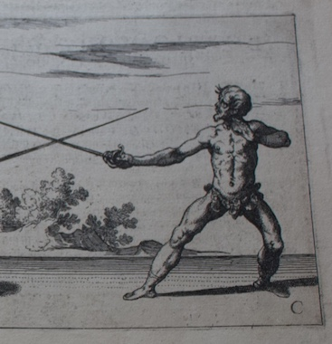

|
The guard stance is one of the two fundamental stances in Italian fencing. There are many minute variations, but the one we will be focussing on is Terza, the third guard. This stance is characterized by a back weighted posture, and defends the three zones of the body (the head, the torso, and the legs) in three separate ways: distance, the sword, and speed. So let's get in guard.
If this position feels uncomfortable do not worry, it takes some getting used to. In this position your head is defended by distance, it is simply a long way away from your opponent. Your torso is defended by the sword, placed directly between you and your opponent. Your legs are defended by speed, leaning into your back leg leaves your front leg free to move, in this context directly back and out of the way to avoid an incoming strike. Now, we lunge! |

Pictured: A student standing in guard, from a plate in the Gran Simulacro |